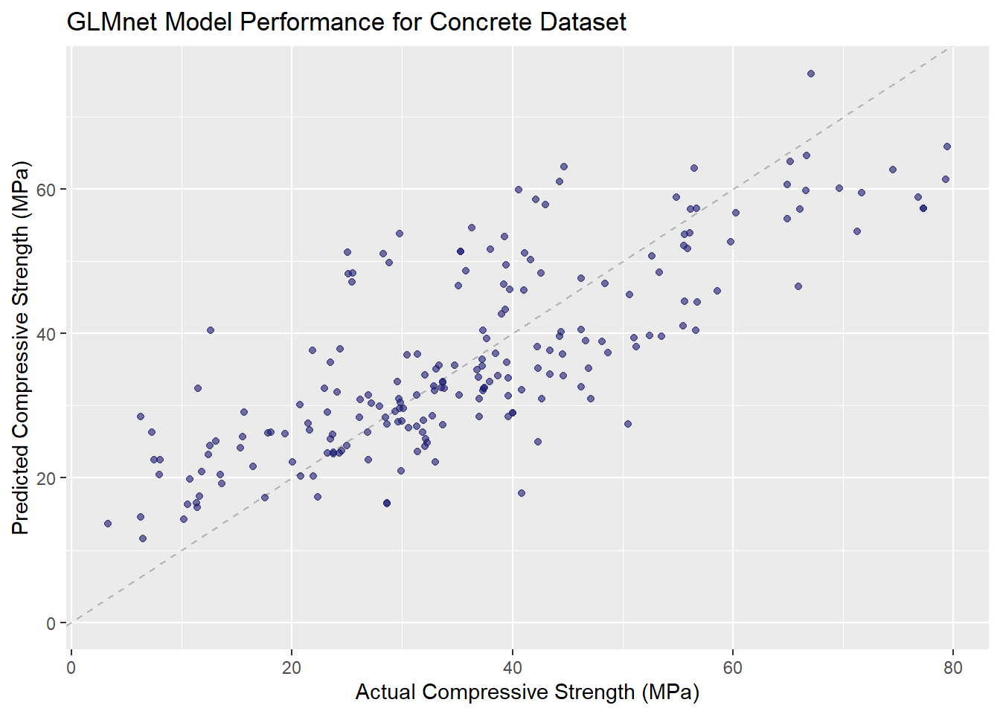

Generalized Linear Modeling of the Concrete Compressive Strength Dataset
Posted on March 26, 2020
In this post, we will begin to use machine learning techniques for predicting compressive strength of formulations using the concrete dataset. In a previous post, we created a model using a conventional material modeling approach which resulted in an R2 of 0.78. Here we will use a generalized linear model to predict compressive strength and compare the results with the conventional material model.
We will utilize the 3-stage machine learning approach promoted by Matt Dancho at Business-Science.io. He posted an excellent tutorial “Product Price Prediction: A Tidy Hyperparamter Tuning and Cross Validation Tutorial”. I haven’t found a better example of applying the tidymodel packages to develop a predictive model.
The 3-stage hyperparameter tuning process: 1. Find Parameters: Use hyperparameter tuning on a “training dataset” that sections your training data into cross validation folds. The output of stage 1 is the parameter set. 2. Compare and Select the Best Model: Evaluate the performance on a hidden “test dataset”. The output at Stage 2 is what we determined as the best model. 3. Train Final Model: Once we have selected the best model, we train the full dataset. This model goes into production.
###Stage 1: Find Parameters Here we want to make different machine learning models and try them out by performing the following steps: - Initial Splitting: Separate into random training and test datasets - Preprocessing: Make a pipeline to transform raw data into a dataset ready for machine learning - Cross Validation Specification: Sample the training data into splits - Model Specification: Select model algorithms and identify key tuning parameters - Grid Specification: Set up a grid using wise parameter choices - Hyperparameter Tuning: Implement the tuning process
Initial splitting of the dataset into Training and Test Dataset Here we use the rsample package to create an 80/20 split. The concrete dataset contains 1030 formulations of which 825 are randomly assigned to training and 205 are randomly assigned to testing.
set.seed(123)
concrete_initial_split <- initial_split(concrete_tbl, prop = 0.80)
concrete_initial_split
## <825/205/1030>
Preprocessing is accomplished by using the recipe package. The recipe provides the steps required to transform our raw data into a dataset suitable for machine learning. The Concrete dataset actually doesn’t require much reformatting. The major issue was the lengthy column names which was addressed immediately after the dataset was imported. The dataset contained all numerical values and no missing data. Initially we will just center and scale the predictors before sending to the glmnet model.
preprocessing_recipe <- recipe(compressive_strength ~ ., data = training(concrete_initial_split)) %>%
#center and scale all numerical predictors
step_center(all_predictors()) %>%
step_scale(all_predictors()) %>%
# #Remove unnecessary columns
# step_rm(model) %>%
prep()
preprocessing_recipe
## Data Recipe
##
## Inputs:
##
## role #variables
## outcome 1
## predictor 8
##
## Training data contained 825 data points and no missing data.
##
## Operations:
##
## Centering for cement, blast_furnace_slag, fly_ash, ... [trained]
## Scaling for cement, blast_furnace_slag, fly_ash, ... [trained]
The recipe is not actually applied to the dataset until you “bake” it. Here we apply the preprocessing pipeline and save it to a new tibble.
concrete_training_preprocessed_tbl <- preprocessing_recipe %>% bake(training(concrete_initial_split))
Cross validation folds are created in order to assess the performance of the model parameters. Here we use 5-fold cross validation to create splits from our training dataset and also using the preprocessing pipeline specified above.
set.seed(123)
concrete_cv_folds <- training(concrete_initial_split) %>%
bake(preprocessing_recipe, new_data = .) %>%
vfold_cv(v = 5)
concrete_cv_folds
## # 5-fold cross-validation
## # A tibble: 5 x 2
## splits id
## <named list> <chr>
## 1 <split [660/165]> Fold1
## 2 <split [660/165]> Fold2
## 3 <split [660/165]> Fold3
## 4 <split [660/165]> Fold4
## 5 <split [660/165]> Fold5
Model specifications are created using the parsnip package. Here we specify a linear regression model using the glmnet engine. glmnet uses an Elastic Net which combines LASSO and Ridge Regression techniques. This is a linear algorithm which may have difficulty with the skewed numeric data which is present in the Concrete dataset. Notice that the penalty and mixture parameters have been specified to be tuned.
glmnet_model <- linear_reg(
mode = "regression",
penalty = tune(),
mixture = tune()
) %>%
set_engine("glmnet")
glmnet_model
## Linear Regression Model Specification (regression)
##
## Main Arguments:
## penalty = tune()
## mixture = tune()
##
## Computational engine: glmnet
Grid specifications sets up a variety of parameter values used with our model to find which combination yields the lowest prediction error (or best accuracy). Here we specify the parameter ranges and grid function using the dials package.
glmnet_params <- parameters(penalty(), mixture())
glmnet_params
## Collection of 2 parameters for tuning
##
## id parameter type object class
## penalty penalty nparam[+]
## mixture mixture nparam[+]
Specify the grid function (max entropy, hypercube etc.). Here we make a grid of 20 values using the grid_max_entropy() function in the dials package. Since there are just 2 tuning parameters in this case, we can visualize the grid selections. Note the penalty parameter is on the log base 10 scale by default. The dials package helps us make smarter choices for the critical tuning parameters.
set.seed(123)
glmnet_grid <- grid_max_entropy(glmnet_params, size = 20)
glmnet_grid %>%
ggplot(aes(penalty, mixture)) +
geom_point(color = "steelblue", size = 3) +
scale_x_log10() +
theme_light() +
labs(title = "Max Entropy Grid", x = "Penalty (log scale)", y = "Mixture")
Hyperparameter tuning is now performed using the tune_grid() function from the tune package. Here we specific the formula, model, resamples, grid and metrics. The metrics come from the yardstick package. For regression problems, we can specify multiple metrics such as mae, mape, rmse and rsq into a metric_set().
glmnet_stage_1_cv_results_tbl <- tune_grid(
formula = compressive_strength ~ .,
model = glmnet_model,
resamples = concrete_cv_folds,
grid = glmnet_grid,
metrics = metric_set(mae, mape, rmse, rsq)#,
#control = control_grid(verbose = TRUE)
)
Identify the best hyperparameter values using the show_best() function.
glmnet_stage_1_cv_results_tbl %>% show_best("mae", n = 10, maximize = FALSE)
## # A tibble: 10 x 7
## penalty mixture .metric .estimator mean n std_err
## <dbl> <dbl> <chr> <chr> <dbl> <int> <dbl>
## 1 2.47e-10 0.666 mae standard 8.42 5 0.135
## 2 1.31e- 7 0.546 mae standard 8.42 5 0.135
## 3 1.48e- 4 0.996 mae standard 8.42 5 0.135
## 4 4.95e- 8 0.753 mae standard 8.42 5 0.135
## 5 1.70e- 3 0.590 mae standard 8.42 5 0.135
## 6 1.49e- 6 0.973 mae standard 8.42 5 0.135
## 7 2.31e- 9 0.921 mae standard 8.42 5 0.135
## 8 1.10e- 5 0.699 mae standard 8.42 5 0.135
## 9 1.69e- 9 0.0491 mae standard 8.42 5 0.135
## 10 7.49e- 7 0.0747 mae standard 8.42 5 0.135
###Stage 2: Compare and Select the Best Model
Select the best parameters based on the lowest mean absolute error.
params_glmnet_best <- glmnet_stage_1_cv_results_tbl %>% select_best("mae", maximize = FALSE)
params_glmnet_best
## # A tibble: 1 x 2
## penalty mixture
## <dbl> <dbl>
## 1 2.47e-10 0.666
Finalize the model with the best parameters.
glmnet_stage_2_model <- glmnet_model %>%
finalize_model(parameters = params_glmnet_best)
glmnet_stage_2_model
## Linear Regression Model Specification (regression)
##
## Main Arguments:
## penalty = 2.46944747219784e-10
## mixture = 0.666244992753491
##
## Computational engine: glmnet
Define a helper function to calculate the performance on the test dataset
calc_test_metrics <- function(formula, model_spec, recipe, split) {
train_processed <- training(split) %>% bake(recipe, new_data = .)
test_processed <- testing(split) %>% bake(recipe, new_data = .)
target_expr <- recipe %>%
pluck("last_term_info") %>%
filter(role == "outcome") %>%
pull(variable) %>%
sym()
model_spec %>%
fit(formula = as.formula(formula),
data = train_processed) %>%
predict(new_data = test_processed) %>%
bind_cols(testing(split)) %>%
metrics(!! target_expr, .pred)
}
Calculate the test performance on the glmnet model.
glmnet_stage_2_metrics <- calc_test_metrics(
formula = compressive_strength ~ .,
model_spec = glmnet_stage_2_model,
recipe = preprocessing_recipe,
split = concrete_initial_split
)
glmnet_stage_2_metrics
## # A tibble: 3 x 3
## .metric .estimator .estimate
## <chr> <chr> <dbl>
## 1 rmse standard 10.3
## 2 rsq standard 0.609
## 3 mae standard 8.12
###Stage 3: Train Final Model
model_final <- glmnet_stage_2_model %>%
fit(compressive_strength ~ ., data = bake(preprocessing_recipe, new_data = concrete_tbl))
Which Features are most important?
vip(model_final, aesthetics = list(fill = "steelblue")) +
labs(title = "GLMNET Model Importance - Compressive Strength (MPa) Prediction") +
theme_bw()

LS0tDQpvdXRwdXQ6IA0KICBodG1sX2RvY3VtZW50Og0KICAgIGNvZGVfZG93bmxvYWQ6IHRydWUNCiAgICBpbmNsdWRlczoNCiAgICAgIGFmdGVyX2JvZHk6IGZvb3Rlci5odG1sDQotLS0NCjxicj4NCmBgYHtyIHNldHVwLCBpbmNsdWRlPUZBTFNFfQ0Ka25pdHI6Om9wdHNfY2h1bmskc2V0KGVjaG8gPSBUUlVFKQ0KYGBgDQoNCmBgYHtyLCBpbmNsdWRlPUZBTFNFfQ0KbGlicmFyeShrbml0cikNCmxpYnJhcnkocmVhZHhsKQ0KbGlicmFyeSh0aWR5dmVyc2UpDQoNCiNUaWR5bW9kZWxzDQpsaWJyYXJ5KHR1bmUpDQpsaWJyYXJ5KGRpYWxzKQ0KbGlicmFyeShwYXJzbmlwKQ0KbGlicmFyeShyc2FtcGxlKQ0KbGlicmFyeShyZWNpcGVzKQ0KI2xpYnJhcnkodGV4dHJlY2lwZXMpDQpsaWJyYXJ5KHlhcmRzdGljaykNCmxpYnJhcnkodmlwKQ0KYGBgDQoNCiMjICoqR2VuZXJhbGl6ZWQgTGluZWFyIE1vZGVsaW5nIG9mIHRoZSBDb25jcmV0ZSBDb21wcmVzc2l2ZSBTdHJlbmd0aCBEYXRhc2V0KioNCipQb3N0ZWQgb24gTWFyY2ggMjYsIDIwMjAqDQoNCkluIHRoaXMgcG9zdCwgd2Ugd2lsbCBiZWdpbiB0byB1c2UgbWFjaGluZSBsZWFybmluZyB0ZWNobmlxdWVzIGZvciBwcmVkaWN0aW5nIGNvbXByZXNzaXZlIHN0cmVuZ3RoIG9mIGZvcm11bGF0aW9ucyB1c2luZyB0aGUgY29uY3JldGUgZGF0YXNldC4gIEluIGEgcHJldmlvdXMgcG9zdCwgd2UgY3JlYXRlZCBhIG1vZGVsIHVzaW5nIGEgY29udmVudGlvbmFsIG1hdGVyaWFsIG1vZGVsaW5nIGFwcHJvYWNoIHdoaWNoIHJlc3VsdGVkIGluIGFuIFJeMl4gb2YgMC43OC4gIEhlcmUgd2Ugd2lsbCB1c2UgYSBnZW5lcmFsaXplZCBsaW5lYXIgbW9kZWwgdG8gcHJlZGljdCBjb21wcmVzc2l2ZSBzdHJlbmd0aCBhbmQgY29tcGFyZSB0aGUgcmVzdWx0cyB3aXRoIHRoZSBjb252ZW50aW9uYWwgbWF0ZXJpYWwgbW9kZWwuDQoNCmBgYHtyLCBpbmNsdWRlPUZBTFNFfQ0KbGlicmFyeShyZWFkeGwpDQpsaWJyYXJ5KHRpZHl2ZXJzZSkNCg0KZmlsZW5hbWUgPC0gIkNvbmNyZXRlX0RhdGEueGxzIg0KDQpmb2xkZXIgPC0gIi4vZGF0YS8iDQpudW1iZXJDb2xzIDwtIDkgI3RvdGFsIG51bWJlciBvZiBjb2x1bW5zIGluIHNwcmVhZHNoZWV0DQoNCmNvbFR5cGVzIDwtIHJlcCgibnVtZXJpYyIsIG51bWJlckNvbHMpDQpjb25jcmV0ZV90YmwgPC0gcmVhZF9leGNlbChwYXRoID0gcGFzdGUwKGZvbGRlciwgZmlsZW5hbWUpLCBjb2xfdHlwZXMgPSBjb2xUeXBlcykNCg0KY29uY3JldGVfdGJsIDwtIGNvbmNyZXRlX3RibCAlPiUNCiAgcmVuYW1lKGNlbWVudCA9IHN0YXJ0c193aXRoKCJDZW1lbnQiKSkgJT4lDQogIHJlbmFtZShibGFzdF9mdXJuYWNlX3NsYWcgPSBzdGFydHNfd2l0aCgiQmxhc3QiKSkgJT4lDQogIHJlbmFtZShmbHlfYXNoID0gc3RhcnRzX3dpdGgoIkZseSBBc2giKSkgJT4lDQogIHJlbmFtZSh3YXRlciA9IHN0YXJ0c193aXRoKCJXYXRlciIpKSAlPiUNCiAgcmVuYW1lKHN1cGVycGxhc3RpY2l6ZXIgPSBzdGFydHNfd2l0aCgiU3VwZXIiKSkgJT4lDQogIHJlbmFtZShjb2Fyc2VfYWdncmVnYXRlID0gc3RhcnRzX3dpdGgoIkNvYXJzZSIpKSAlPiUNCiAgcmVuYW1lKGZpbmVfYWdncmVnYXRlID0gc3RhcnRzX3dpdGgoIkZpbmUiKSkgJT4lDQogIHJlbmFtZShhZ2UgPSBzdGFydHNfd2l0aCgiQWdlIikpICU+JQ0KICByZW5hbWUoY29tcHJlc3NpdmVfc3RyZW5ndGggPSBzdGFydHNfd2l0aCgiQ29uY3JldGUiKSkNCmBgYA0KDQpXZSB3aWxsIHV0aWxpemUgdGhlIDMtc3RhZ2UgbWFjaGluZSBsZWFybmluZyBhcHByb2FjaCBwcm9tb3RlZCBieSBNYXR0IERhbmNobyBhdCBCdXNpbmVzcy1TY2llbmNlLmlvLiAgSGUgcG9zdGVkIGFuIGV4Y2VsbGVudCB0dXRvcmlhbCAiUHJvZHVjdCBQcmljZSBQcmVkaWN0aW9uOiBBIFRpZHkgSHlwZXJwYXJhbXRlciBUdW5pbmcgYW5kIENyb3NzIFZhbGlkYXRpb24gVHV0b3JpYWwiLiAgSSBoYXZlbid0IGZvdW5kIGEgYmV0dGVyIGV4YW1wbGUgb2YgYXBwbHlpbmcgdGhlIHRpZHltb2RlbCBwYWNrYWdlcyB0byBkZXZlbG9wIGEgcHJlZGljdGl2ZSBtb2RlbC4NCg0KVGhlIDMtc3RhZ2UgaHlwZXJwYXJhbWV0ZXIgdHVuaW5nIHByb2Nlc3M6DQoxLiAqKkZpbmQgUGFyYW1ldGVyczoqKiBVc2UgaHlwZXJwYXJhbWV0ZXIgdHVuaW5nIG9uIGEgInRyYWluaW5nIGRhdGFzZXQiIHRoYXQgc2VjdGlvbnMgeW91ciB0cmFpbmluZyBkYXRhIGludG8gY3Jvc3MgdmFsaWRhdGlvbiBmb2xkcy4gIFRoZSBvdXRwdXQgb2Ygc3RhZ2UgMSBpcyB0aGUgcGFyYW1ldGVyIHNldC4NCjIuICoqQ29tcGFyZSBhbmQgU2VsZWN0IHRoZSBCZXN0IE1vZGVsOioqIEV2YWx1YXRlIHRoZSBwZXJmb3JtYW5jZSBvbiBhIGhpZGRlbiAidGVzdCBkYXRhc2V0Ii4gIFRoZSBvdXRwdXQgYXQgU3RhZ2UgMiBpcyB3aGF0IHdlIGRldGVybWluZWQgYXMgdGhlIGJlc3QgbW9kZWwuDQozLiAqKlRyYWluIEZpbmFsIE1vZGVsOioqIE9uY2Ugd2UgaGF2ZSBzZWxlY3RlZCB0aGUgYmVzdCBtb2RlbCwgd2UgdHJhaW4gdGhlIGZ1bGwgZGF0YXNldC4gIFRoaXMgbW9kZWwgZ29lcyBpbnRvIHByb2R1Y3Rpb24uDQoNCg0KIyMjU3RhZ2UgMTogRmluZCBQYXJhbWV0ZXJzDQpIZXJlIHdlIHdhbnQgdG8gbWFrZSBkaWZmZXJlbnQgbWFjaGluZSBsZWFybmluZyBtb2RlbHMgYW5kIHRyeSB0aGVtIG91dCBieSBwZXJmb3JtaW5nIHRoZSBmb2xsb3dpbmcgc3RlcHM6DQotIEluaXRpYWwgU3BsaXR0aW5nOiBTZXBhcmF0ZSBpbnRvIHJhbmRvbSB0cmFpbmluZyBhbmQgdGVzdCBkYXRhc2V0cw0KLSBQcmVwcm9jZXNzaW5nOiBNYWtlIGEgcGlwZWxpbmUgdG8gdHJhbnNmb3JtIHJhdyBkYXRhIGludG8gYSBkYXRhc2V0IHJlYWR5IGZvciBtYWNoaW5lIGxlYXJuaW5nDQotIENyb3NzIFZhbGlkYXRpb24gU3BlY2lmaWNhdGlvbjogU2FtcGxlIHRoZSB0cmFpbmluZyBkYXRhIGludG8gc3BsaXRzDQotIE1vZGVsIFNwZWNpZmljYXRpb246IFNlbGVjdCBtb2RlbCBhbGdvcml0aG1zIGFuZCBpZGVudGlmeSBrZXkgdHVuaW5nIHBhcmFtZXRlcnMNCi0gR3JpZCBTcGVjaWZpY2F0aW9uOiBTZXQgdXAgYSBncmlkIHVzaW5nIHdpc2UgcGFyYW1ldGVyIGNob2ljZXMNCi0gSHlwZXJwYXJhbWV0ZXIgVHVuaW5nOiBJbXBsZW1lbnQgdGhlIHR1bmluZyBwcm9jZXNzDQoNCkluaXRpYWwgc3BsaXR0aW5nIG9mIHRoZSBkYXRhc2V0IGludG8gVHJhaW5pbmcgYW5kIFRlc3QgRGF0YXNldCAgSGVyZSB3ZSB1c2UgdGhlIHJzYW1wbGUgcGFja2FnZSB0byBjcmVhdGUgYW4gODAvMjAgc3BsaXQuICBUaGUgY29uY3JldGUgZGF0YXNldCBjb250YWlucyAxMDMwIGZvcm11bGF0aW9ucyBvZiB3aGljaCA4MjUgYXJlIHJhbmRvbWx5IGFzc2lnbmVkIHRvIHRyYWluaW5nIGFuZCAyMDUgYXJlIHJhbmRvbWx5IGFzc2lnbmVkIHRvIHRlc3RpbmcuDQpgYGB7cn0NCnNldC5zZWVkKDEyMykNCmNvbmNyZXRlX2luaXRpYWxfc3BsaXQgPC0gaW5pdGlhbF9zcGxpdChjb25jcmV0ZV90YmwsIHByb3AgPSAwLjgwKQ0KY29uY3JldGVfaW5pdGlhbF9zcGxpdA0KYGBgDQoNClByZXByb2Nlc3NpbmcgaXMgYWNjb21wbGlzaGVkIGJ5IHVzaW5nIHRoZSByZWNpcGUgcGFja2FnZS4gIFRoZSByZWNpcGUgcHJvdmlkZXMgdGhlIHN0ZXBzIHJlcXVpcmVkIHRvIHRyYW5zZm9ybSBvdXIgcmF3IGRhdGEgaW50byBhIGRhdGFzZXQgc3VpdGFibGUgZm9yIG1hY2hpbmUgbGVhcm5pbmcuICBUaGUgQ29uY3JldGUgZGF0YXNldCBhY3R1YWxseSBkb2Vzbid0IHJlcXVpcmUgbXVjaCByZWZvcm1hdHRpbmcuICBUaGUgbWFqb3IgaXNzdWUgd2FzIHRoZSBsZW5ndGh5IGNvbHVtbiBuYW1lcyB3aGljaCB3YXMgYWRkcmVzc2VkIGltbWVkaWF0ZWx5IGFmdGVyIHRoZSBkYXRhc2V0IHdhcyBpbXBvcnRlZC4gIFRoZSBkYXRhc2V0IGNvbnRhaW5lZCBhbGwgbnVtZXJpY2FsIHZhbHVlcyBhbmQgbm8gbWlzc2luZyBkYXRhLiAgSW5pdGlhbGx5IHdlIHdpbGwganVzdCBjZW50ZXIgYW5kIHNjYWxlIHRoZSBwcmVkaWN0b3JzIGJlZm9yZSBzZW5kaW5nIHRvIHRoZSBnbG1uZXQgbW9kZWwuDQpgYGB7cn0NCnByZXByb2Nlc3NpbmdfcmVjaXBlIDwtIHJlY2lwZShjb21wcmVzc2l2ZV9zdHJlbmd0aCB+IC4sIGRhdGEgPSB0cmFpbmluZyhjb25jcmV0ZV9pbml0aWFsX3NwbGl0KSkgJT4lDQogIA0KICAjY2VudGVyIGFuZCBzY2FsZSBhbGwgbnVtZXJpY2FsIHByZWRpY3RvcnMNCiAgc3RlcF9jZW50ZXIoYWxsX3ByZWRpY3RvcnMoKSkgJT4lDQogIHN0ZXBfc2NhbGUoYWxsX3ByZWRpY3RvcnMoKSkgJT4lDQogIA0KICAjICNSZW1vdmUgdW5uZWNlc3NhcnkgY29sdW1ucw0KICAjIHN0ZXBfcm0obW9kZWwpICU+JQ0KICBwcmVwKCkNCg0KcHJlcHJvY2Vzc2luZ19yZWNpcGUNCmBgYA0KDQpUaGUgcmVjaXBlIGlzIG5vdCBhY3R1YWxseSBhcHBsaWVkIHRvIHRoZSBkYXRhc2V0IHVudGlsIHlvdSAiYmFrZSIgaXQuICBIZXJlIHdlIGFwcGx5IHRoZSBwcmVwcm9jZXNzaW5nIHBpcGVsaW5lIGFuZCBzYXZlIGl0IHRvIGEgbmV3IHRpYmJsZS4NCmBgYHtyfQ0KY29uY3JldGVfdHJhaW5pbmdfcHJlcHJvY2Vzc2VkX3RibCA8LSBwcmVwcm9jZXNzaW5nX3JlY2lwZSAlPiUgYmFrZSh0cmFpbmluZyhjb25jcmV0ZV9pbml0aWFsX3NwbGl0KSkNCmBgYA0KDQpDcm9zcyB2YWxpZGF0aW9uIGZvbGRzIGFyZSBjcmVhdGVkIGluIG9yZGVyIHRvIGFzc2VzcyB0aGUgcGVyZm9ybWFuY2Ugb2YgdGhlIG1vZGVsIHBhcmFtZXRlcnMuICBIZXJlIHdlIHVzZSA1LWZvbGQgY3Jvc3MgdmFsaWRhdGlvbiB0byBjcmVhdGUgc3BsaXRzIGZyb20gb3VyIHRyYWluaW5nIGRhdGFzZXQgYW5kIGFsc28gdXNpbmcgdGhlIHByZXByb2Nlc3NpbmcgcGlwZWxpbmUgc3BlY2lmaWVkIGFib3ZlLg0KYGBge3J9DQpzZXQuc2VlZCgxMjMpDQpjb25jcmV0ZV9jdl9mb2xkcyA8LSB0cmFpbmluZyhjb25jcmV0ZV9pbml0aWFsX3NwbGl0KSAlPiUNCiAgYmFrZShwcmVwcm9jZXNzaW5nX3JlY2lwZSwgbmV3X2RhdGEgPSAuKSAlPiUNCiAgdmZvbGRfY3YodiA9IDUpDQoNCmNvbmNyZXRlX2N2X2ZvbGRzDQpgYGANCg0KTW9kZWwgc3BlY2lmaWNhdGlvbnMgYXJlIGNyZWF0ZWQgdXNpbmcgdGhlIHBhcnNuaXAgcGFja2FnZS4gIEhlcmUgd2Ugc3BlY2lmeSBhIGxpbmVhciByZWdyZXNzaW9uIG1vZGVsIHVzaW5nIHRoZSBnbG1uZXQgZW5naW5lLiAgZ2xtbmV0IHVzZXMgYW4gRWxhc3RpYyBOZXQgd2hpY2ggY29tYmluZXMgTEFTU08gYW5kIFJpZGdlIFJlZ3Jlc3Npb24gdGVjaG5pcXVlcy4gIFRoaXMgaXMgYSBsaW5lYXIgYWxnb3JpdGhtIHdoaWNoIG1heSBoYXZlIGRpZmZpY3VsdHkgd2l0aCB0aGUgc2tld2VkIG51bWVyaWMgZGF0YSB3aGljaCBpcyBwcmVzZW50IGluIHRoZSBDb25jcmV0ZSBkYXRhc2V0LiAgTm90aWNlIHRoYXQgdGhlIHBlbmFsdHkgYW5kIG1peHR1cmUgcGFyYW1ldGVycyBoYXZlIGJlZW4gc3BlY2lmaWVkIHRvIGJlIHR1bmVkLg0KYGBge3J9DQpnbG1uZXRfbW9kZWwgPC0gbGluZWFyX3JlZygNCiAgbW9kZSA9ICJyZWdyZXNzaW9uIiwNCiAgcGVuYWx0eSA9IHR1bmUoKSwNCiAgbWl4dHVyZSA9IHR1bmUoKQ0KKSAlPiUNCiAgc2V0X2VuZ2luZSgiZ2xtbmV0IikNCg0KZ2xtbmV0X21vZGVsDQpgYGANCg0KR3JpZCBzcGVjaWZpY2F0aW9ucyBzZXRzIHVwIGEgdmFyaWV0eSBvZiBwYXJhbWV0ZXIgdmFsdWVzIHVzZWQgd2l0aCBvdXIgbW9kZWwgdG8gZmluZCB3aGljaCBjb21iaW5hdGlvbiB5aWVsZHMgdGhlIGxvd2VzdCBwcmVkaWN0aW9uIGVycm9yIChvciBiZXN0IGFjY3VyYWN5KS4gIEhlcmUgd2Ugc3BlY2lmeSB0aGUgcGFyYW1ldGVyIHJhbmdlcyBhbmQgZ3JpZCBmdW5jdGlvbiB1c2luZyB0aGUgZGlhbHMgcGFja2FnZS4NCmBgYHtyfQ0KZ2xtbmV0X3BhcmFtcyA8LSBwYXJhbWV0ZXJzKHBlbmFsdHkoKSwgbWl4dHVyZSgpKQ0KZ2xtbmV0X3BhcmFtcw0KYGBgDQoNClNwZWNpZnkgdGhlIGdyaWQgZnVuY3Rpb24gKG1heCBlbnRyb3B5LCBoeXBlcmN1YmUgZXRjLikuICBIZXJlIHdlIG1ha2UgYSBncmlkIG9mIDIwIHZhbHVlcyB1c2luZyB0aGUgZ3JpZF9tYXhfZW50cm9weSgpIGZ1bmN0aW9uIGluIHRoZSBkaWFscyBwYWNrYWdlLiAgU2luY2UgdGhlcmUgYXJlIGp1c3QgMiB0dW5pbmcgcGFyYW1ldGVycyBpbiB0aGlzIGNhc2UsIHdlIGNhbiB2aXN1YWxpemUgdGhlIGdyaWQgc2VsZWN0aW9ucy4gIE5vdGUgdGhlIHBlbmFsdHkgcGFyYW1ldGVyIGlzIG9uIHRoZSBsb2cgYmFzZSAxMCBzY2FsZSBieSBkZWZhdWx0LiAgVGhlIGRpYWxzIHBhY2thZ2UgaGVscHMgdXMgbWFrZSBzbWFydGVyIGNob2ljZXMgZm9yIHRoZSBjcml0aWNhbCB0dW5pbmcgcGFyYW1ldGVycy4NCmBgYHtyfQ0Kc2V0LnNlZWQoMTIzKQ0KZ2xtbmV0X2dyaWQgPC0gZ3JpZF9tYXhfZW50cm9weShnbG1uZXRfcGFyYW1zLCBzaXplID0gMjApDQoNCmdsbW5ldF9ncmlkICU+JQ0KICBnZ3Bsb3QoYWVzKHBlbmFsdHksIG1peHR1cmUpKSArDQogIGdlb21fcG9pbnQoY29sb3IgPSAic3RlZWxibHVlIiwgc2l6ZSA9IDMpICsNCiAgc2NhbGVfeF9sb2cxMCgpICsNCiAgdGhlbWVfbGlnaHQoKSArDQogIGxhYnModGl0bGUgPSAiTWF4IEVudHJvcHkgR3JpZCIsIHggPSAiUGVuYWx0eSAobG9nIHNjYWxlKSIsIHkgPSAiTWl4dHVyZSIpDQpgYGANCg0KSHlwZXJwYXJhbWV0ZXIgdHVuaW5nIGlzIG5vdyBwZXJmb3JtZWQgdXNpbmcgdGhlIHR1bmVfZ3JpZCgpIGZ1bmN0aW9uIGZyb20gdGhlIHR1bmUgcGFja2FnZS4gIEhlcmUgd2Ugc3BlY2lmaWMgdGhlIGZvcm11bGEsIG1vZGVsLCByZXNhbXBsZXMsIGdyaWQgYW5kIG1ldHJpY3MuICBUaGUgbWV0cmljcyBjb21lIGZyb20gdGhlIHlhcmRzdGljayBwYWNrYWdlLiBGb3IgcmVncmVzc2lvbiBwcm9ibGVtcywgd2UgY2FuIHNwZWNpZnkgbXVsdGlwbGUgbWV0cmljcyBzdWNoIGFzIG1hZSwgbWFwZSwgcm1zZSBhbmQgcnNxIGludG8gYSBtZXRyaWNfc2V0KCkuDQpgYGB7cn0NCmdsbW5ldF9zdGFnZV8xX2N2X3Jlc3VsdHNfdGJsIDwtIHR1bmVfZ3JpZCgNCiAgZm9ybXVsYSA9IGNvbXByZXNzaXZlX3N0cmVuZ3RoIH4gLiwNCiAgbW9kZWwgPSBnbG1uZXRfbW9kZWwsDQogIHJlc2FtcGxlcyA9IGNvbmNyZXRlX2N2X2ZvbGRzLA0KICBncmlkID0gZ2xtbmV0X2dyaWQsDQogIG1ldHJpY3MgPSBtZXRyaWNfc2V0KG1hZSwgbWFwZSwgcm1zZSwgcnNxKSMsDQogICNjb250cm9sID0gY29udHJvbF9ncmlkKHZlcmJvc2UgPSBUUlVFKQ0KKQ0KYGBgDQoNCklkZW50aWZ5IHRoZSBiZXN0IGh5cGVycGFyYW1ldGVyIHZhbHVlcyB1c2luZyB0aGUgc2hvd19iZXN0KCkgZnVuY3Rpb24uDQpgYGB7cn0NCmdsbW5ldF9zdGFnZV8xX2N2X3Jlc3VsdHNfdGJsICU+JSBzaG93X2Jlc3QoIm1hZSIsIG4gPSAxMCwgbWF4aW1pemUgPSBGQUxTRSkNCmBgYA0KDQojIyNTdGFnZSAyOiBDb21wYXJlIGFuZCBTZWxlY3QgdGhlIEJlc3QgTW9kZWwNCg0KU2VsZWN0IHRoZSBiZXN0IHBhcmFtZXRlcnMgYmFzZWQgb24gdGhlIGxvd2VzdCBtZWFuIGFic29sdXRlIGVycm9yLg0KYGBge3J9DQpwYXJhbXNfZ2xtbmV0X2Jlc3QgPC0gZ2xtbmV0X3N0YWdlXzFfY3ZfcmVzdWx0c190YmwgJT4lIHNlbGVjdF9iZXN0KCJtYWUiLCBtYXhpbWl6ZSA9IEZBTFNFKQ0KcGFyYW1zX2dsbW5ldF9iZXN0DQpgYGANCg0KRmluYWxpemUgdGhlIG1vZGVsIHdpdGggdGhlIGJlc3QgcGFyYW1ldGVycy4NCmBgYHtyfQ0KZ2xtbmV0X3N0YWdlXzJfbW9kZWwgPC0gZ2xtbmV0X21vZGVsICU+JQ0KICBmaW5hbGl6ZV9tb2RlbChwYXJhbWV0ZXJzID0gcGFyYW1zX2dsbW5ldF9iZXN0KQ0KDQpnbG1uZXRfc3RhZ2VfMl9tb2RlbA0KYGBgDQoNCkRlZmluZSBhIGhlbHBlciBmdW5jdGlvbiB0byBjYWxjdWxhdGUgdGhlIHBlcmZvcm1hbmNlIG9uIHRoZSB0ZXN0IGRhdGFzZXQNCmBgYHtyfQ0KY2FsY190ZXN0X21ldHJpY3MgPC0gZnVuY3Rpb24oZm9ybXVsYSwgbW9kZWxfc3BlYywgcmVjaXBlLCBzcGxpdCkgew0KICANCiAgdHJhaW5fcHJvY2Vzc2VkIDwtIHRyYWluaW5nKHNwbGl0KSAlPiUgYmFrZShyZWNpcGUsIG5ld19kYXRhID0gLikNCiAgdGVzdF9wcm9jZXNzZWQgPC0gdGVzdGluZyhzcGxpdCkgJT4lIGJha2UocmVjaXBlLCBuZXdfZGF0YSA9IC4pDQogIA0KICB0YXJnZXRfZXhwciA8LSByZWNpcGUgJT4lDQogICAgcGx1Y2soImxhc3RfdGVybV9pbmZvIikgJT4lDQogICAgZmlsdGVyKHJvbGUgPT0gIm91dGNvbWUiKSAlPiUNCiAgICBwdWxsKHZhcmlhYmxlKSAlPiUNCiAgICBzeW0oKQ0KICANCiAgbW9kZWxfc3BlYyAlPiUNCiAgICBmaXQoZm9ybXVsYSA9IGFzLmZvcm11bGEoZm9ybXVsYSksDQogICAgICAgIGRhdGEgPSB0cmFpbl9wcm9jZXNzZWQpICU+JQ0KICAgIHByZWRpY3QobmV3X2RhdGEgPSB0ZXN0X3Byb2Nlc3NlZCkgJT4lDQogICAgYmluZF9jb2xzKHRlc3Rpbmcoc3BsaXQpKSAlPiUNCiAgICBtZXRyaWNzKCEhIHRhcmdldF9leHByLCAucHJlZCkNCn0NCmBgYA0KDQpDYWxjdWxhdGUgdGhlIHRlc3QgcGVyZm9ybWFuY2Ugb24gdGhlIGdsbW5ldCBtb2RlbC4NCmBgYHtyfQ0KZ2xtbmV0X3N0YWdlXzJfbWV0cmljcyA8LSBjYWxjX3Rlc3RfbWV0cmljcygNCiAgZm9ybXVsYSA9IGNvbXByZXNzaXZlX3N0cmVuZ3RoIH4gLiwNCiAgbW9kZWxfc3BlYyA9IGdsbW5ldF9zdGFnZV8yX21vZGVsLA0KICByZWNpcGUgPSBwcmVwcm9jZXNzaW5nX3JlY2lwZSwNCiAgc3BsaXQgPSBjb25jcmV0ZV9pbml0aWFsX3NwbGl0DQopDQoNCmdsbW5ldF9zdGFnZV8yX21ldHJpY3MNCmBgYA0KDQojIyNTdGFnZSAzOiBUcmFpbiBGaW5hbCBNb2RlbA0KYGBge3J9DQptb2RlbF9maW5hbCA8LSBnbG1uZXRfc3RhZ2VfMl9tb2RlbCAlPiUNCiAgZml0KGNvbXByZXNzaXZlX3N0cmVuZ3RoIH4gLiwgZGF0YSA9IGJha2UocHJlcHJvY2Vzc2luZ19yZWNpcGUsIG5ld19kYXRhID0gY29uY3JldGVfdGJsKSkNCmBgYA0KDQpXaGljaCBGZWF0dXJlcyBhcmUgbW9zdCBpbXBvcnRhbnQ/DQpgYGB7cn0NCnZpcChtb2RlbF9maW5hbCwgYWVzdGhldGljcyA9IGxpc3QoZmlsbCA9ICJzdGVlbGJsdWUiKSkgKw0KICBsYWJzKHRpdGxlID0gIkdMTU5FVCBNb2RlbCBJbXBvcnRhbmNlIC0gQ29tcHJlc3NpdmUgU3RyZW5ndGggKE1QYSkgUHJlZGljdGlvbiIpICsNCiAgdGhlbWVfYncoKQ0KYGBgDQoNCg==